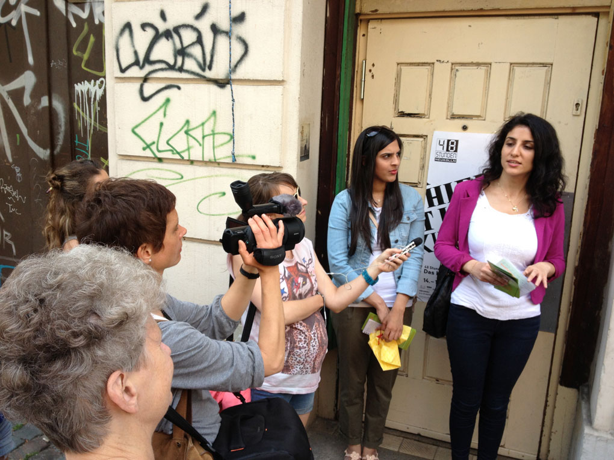
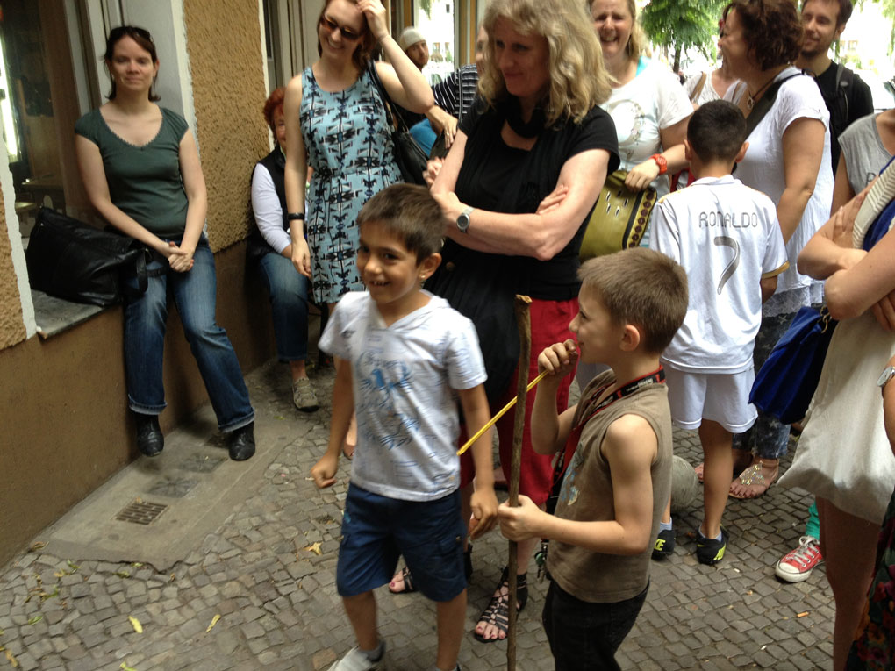

Rave: Neukölln’s Intercultural Day-to-Day
A Berlin restaurant with an American name run by a Tunisian who prepares Italian fare in Halal style? Anywhere else this collision of cultures on a plate would be considered poor marketing. In Neukölln it’s more or less the norm.
{kind=link}
“L.A. New York Restaurant” was the second stop along Erkundung im Paradies, one of numerous tours offered by Route 44 that explore Neukölln’s migration history and interculturalism. The tours are entirely female-run and designed by a group of diverse women who are proud to call Neukölln their “(second) home”.
Neukölln is Berlin’s 8th district and home to 320,000 residents, approximately 40% of which
are not ethnically German. Almost 150 nationalities are represented (primarily Turkey, the Arab
world, and former Yugoslavia) and the district is at the heart of Berlin’s gentrification
debate, making Neukölln hard to ignore. Nonetheless, it was off my radar for years and continues
to be for tourists who either don’t know it exists or have been warned it’s too
dangerous to visit. My 250 page Berlin guide book from 2003 doesn’t say one word about
Neukölln. Ten years later and it’s still not mentioned on
this list or
this list
or this list.
It is on this one: “More
down-to-earth are the working-class districts of Wedding in the north and Neukölln in the south,
which is sometimes referred to as the Berlin Bronx. Although they both have a reputation of
being ghettos for the poor, unemployed and other down-and-outs, they are not as bad as they are
made out to be.” What a ringing endorsement.
The Route 44 girls describe Neukölln as a region of “irritating problems but fascinating potential”. Unfortunately Neukölln’s problems go beyond irritating to downright serious: they have one of the city’s highest unemployment rates (17%), high child poverty rates, and a crime rate that is about 40% higher than Berlin’s average. But it is also home to immense diversity, creativity, and rich cultural history. Reducing Neukölln (or any struggling region) to the “poor, unemployed and other down-and-outs” is not only unfair, it’s unproductive.
Erkundung im Paradies or “Exploring Paradise” showcases this “fascinating potential” through an exploration of a neighborhood and its various houses of worship, educational institutions, trendy bars, and international restaurants. Yet perhaps the most interesting facet of the tour was not the stops itself, but the open dialogue it generated. The tour participants were largely locals and the intermittent chatter and questions culminated in a discussion on religion and the role of the headscarf. Hiba and Maria, our guides, responded openly and respectfully to questions from the group that ranged from “Aren’t women forced to wear them?” to “Why don’t you wear one?” Hiba (Lebanese-German) and Maria (Pakistani-German) don’t wear headscarves and explained that while it’s a commitment they’re not ready to make now, they don’t rule it out for the future. Either way, it’s their choice alone.
{kind=link}
When asked by a journalist why they do the tours, they responded quite simply: “Neukölln has a bad reputation, and we want to change that.”
I’d say the guidebooks should take note, but I’m not sure we need them. These women are creating their own and it’s a lot more interesting.
– By Sophia Burton
For more information on Route 44 tours, click here. Tours are offered every first and third Saturday of the month and registration is not necessary. Bring something to cover your shoulders during visits to houses of worship. Tours are given in German but the guides offer a variety of other languages that include English, Urdu, Arabic, and Turkish.
Funkhaus Europa recorded the above-mentioned tour and you can access the article and audio here.